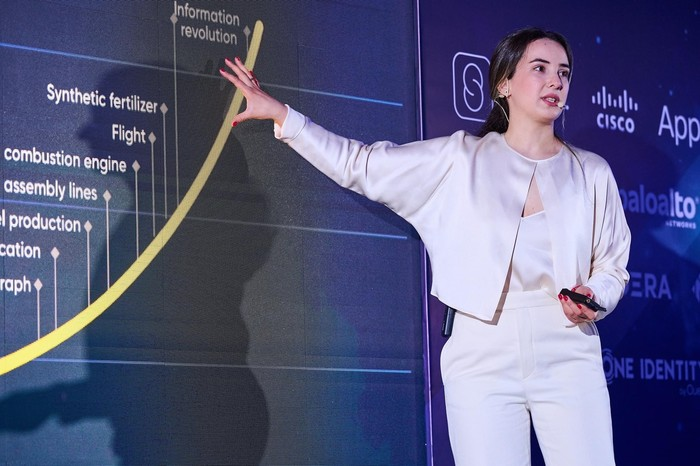
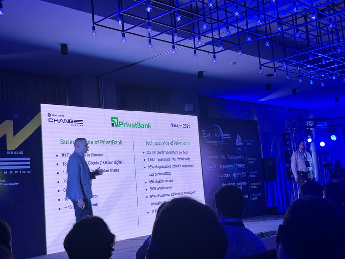

7 ივლისს, თიბისის მხარდაჭერითა და HT Solutions-ის ორგანიზებით, Axis Towers-მა საქართველოში უდიდეს ყოველწლიურ ტექნოლოგიურ კონფერენციას, Change Inspire-ს უმასპინძლა. კონფერენციას ტექნოლოგიური სფეროთი დაინტერესებული 500-ზე მეტი ადამიანი დაესწრო. სპიკერები სტუმრებს კონფერენციის ოთხი ძირითადი პანელის — ციფრული ტრანსფორმაციის, DevOps-ის, კიბერუსაფრთხოებისა და დიდი მონაცემების (Big Data) შესახებ ესაუბრნენ და მათ ამ სფეროებში არსებული სიახლეები და ტრენდები გააცნეს.
კონფერენციის ორგანიზატორის, HT Solutions-ის დირექტორის, ნინო გვაზავას თქმით, კონფერენცია ყოველ წელს უფრო და უფრო იზრდება და მისი მიზანი ქართული ბაზრისთვის გლობალური ტრენდების შესახებ სიახლეებისა და საუკეთესო პრაქტიკების გაზიარებაა.
კონფერენციის მთავარ დარბაზში გამომსვლელებმა ისაუბრეს ისეთ მნიშვნელოვან თემებზე, როგორებიცაა ინტერნეტის გეოგრაფია და მისი ტრანსფორმაციის მომავალი; შავი ზღვის კაბელის პროექტი და მისი პერსპექტივები; უკრაინის ომის გავლენა გლობალურ კიბერუსაფრთხოებაზე; მემკვიდრეობითი სისტემების მოდერნიზაცია; ინდუსტრიული ინჟინერიის მომავალი და ა.შ.
სპიკერთა შორის იყვნენ აზერტელეკომის აღმასრულებელი დირექტორი — ანა ნაკაშიძე, სსე-ის დირექტორთა საბჭოს წევრი — ზვიად გაჩეჩილაძე, HT Solutions-ის კიბერუსაფრთხოების დეპარტამენტის ხელმძღვანელი — გიორგი გვარამაშვილი, Siemens Digital Factory-ის უფროსი პროგრამული არქიტექტორი — გიორგი მამალაძე, Google-ის მონაცემების, ანალიტიკისა და AI პროდუქტის სპეციალისტი — ტომაშ ჩარნეცკი და ა.შ.
"როგორც ადგილობრივმა, ისე გლობალურმა კომპანიებმა გაგვიზიარეს საკუთარი ტექ გადაწყვეტები, თუ როგორ შეგვიძლია შევქმნათ წარმატებული პროგრამული უზრუნველყოფა და მივიტანოთ სამიზნე მომხმარებლამდე ჩვენი პროდუქტი უწყვეტ რეჟიმში. მომეწონა ის, რომ კონფერენციას ტექნოლოგიური სფეროს ბევრი სპეციალისტი ესწრებოდა და გარდა სპიკერ-მსმენელის ფორმატით გამოცდილების გაზიარებისა, საშუალება გვქონდა, ერთმანეთი პირადად გაგვეცნო. შესაბამისად, ნეთვორქინგის კუთხითაც საკმაოდ კარგი შესაძლებლობა იყო. კონფერენციამ ჩემს მოლოდინებს ნამდვილად გადააჭარბა", — გვითხრა პროგრამული უზრუნველყოფის დეველოპერმა, გიორგი თამარაშვილმა.